WxMaxima är ett grafiskt användargränssnitt (GUI) för datoralgebrasystemet (CAS) Maxima. WxMaxima ger tillgång till alla funktioner i Maxima och erbjuder dessutom praktiska guider för de vanligaste funktionerna. Den här handboken beskriver några av de egenskaper som gör wxMaxima till ett av de populäraste grafiska gränssnitten för Maxima.
Inom öppen källkod delas stora system vanligen upp i mindre projekt som är lättare för små utvecklargrupper att hantera. Ett CD-brännarprogram består till exempel av ett kommandoradsverktyg som faktiskt bränner skivan och ett grafiskt användargränssnitt som låter användaren göra detta utan att lära sig alla kommandoradsalternativ, eller ens använda kommandoraden. En fördel är att utvecklingsarbetet för kommandoradsprogrammet kan komma flera program till nytta. Samma CD-brännarverktyg kan användas som ett tillägg för att skicka filer till CD i en filhanterare, för en musikspelares funktion för att bränna CD och för att skriva CD-skivor i ett verktyg för DVD-säkerhetskopiering. En annan fördel är att uppdelningen av en stor uppgift i mindre delar gör det möjligt att erbjuda flera användargränssnitt till samma program.
Ett datoralgebrasystem (CAS) som Maxima passar in i detta upplägg. Ett CAS kan tillhandahålla logiken i en kalkylator med godtycklig precision eller automatiskt omforma formler i bakgrunden i ett större system, till exempel Sage. Det kan också användas direkt som ett fristående system. Maxima kan användas via kommandoraden. Ofta är dock ett gränssnitt som wxMaxima ett effektivare sätt att använda programvaran, särskilt för nybörjare.
Maxima är ett fullfjädrat datoralgebrasystem (CAS). Ett CAS är ett program som kan lösa matematiska problem genom att omforma formler och hitta en formel som löser problemet, i stället för att bara ange ett numeriskt resultat. Maxima kan alltså fungera som en kalkylator som ger numeriska representationer av variabler och kan även ge analytiska lösningar. Dessutom erbjuder programmet olika numeriska analysmetoder för ekvationer och ekvationssystem som inte kan lösas analytiskt.
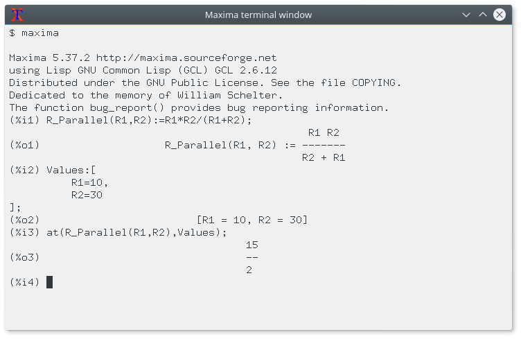
Omfattande dokumentation för Maxima finns på internet. En del av dokumentationen finns även i wxMaximas hjälpmeny. När du trycker på hjälptangenten, vanligen F1, går wxMaxima automatiskt till sidan i Maxima-handboken för kommandot vid markören.
WxMaxima är ett grafiskt användargränssnitt som ger tillgång till Maxima med all dess funktionalitet och flexibilitet. WxMaxima erbjuder grafisk visning och många funktioner som underlättar arbetet med Maxima. Du kan till exempel högerklicka för att exportera en cells innehåll, eller en del av en formel, som text, LaTeX eller MathML. Du kan även exportera en hel arbetsbok som en HTML- eller LaTeX-fil. Dokumentation för wxMaxima, inklusive arbetsböcker som visar hur programmet kan användas, finns på wxMaxima-hjälpwebbplatsen och via hjälpmenyn.
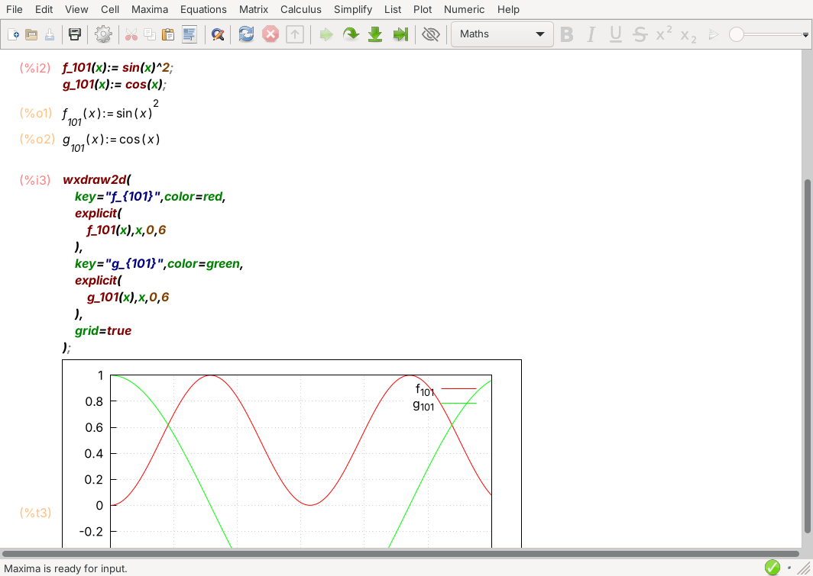
Beräkningar som anges i wxMaxima utförs i bakgrunden av kommandoradsverktyget Maxima.
Mycket i wxMaxima är självförklarande, men vissa detaljer kräver uppmärksamhet. På den här webbplatsen finns ett antal arbetsböcker som behandlar olika delar av wxMaxima. Genom att arbeta igenom några av dem, särskilt “10 minute (wx)Maxima tutorial”, blir du mer bekant med både Maxima och hur du använder wxMaxima för att arbeta med det. Den här handboken fokuserar på sådant i wxMaxima som inte är självklart och kanske inte behandlas i materialet på nätet.
En av få saker som inte följer vanliga konventioner i wxMaxima är att data för Maxima ordnas i celler som beräknas, alltså skickas till Maxima, först när användaren begär det. När en cell beräknas körs alla kommandon i just den cellen i en följd. Detta är inte helt exakt: du kan även markera flera intilliggande celler och beräkna dem tillsammans, eller låta Maxima beräkna alla celler i en arbetsbok i ett enda steg. WxMaximas sätt att skicka kommandon för körning kan verka ovant till en början. Det förenklar dock arbetet med stora dokument avsevärt, eftersom varje ändring då inte behöver utlösa en fullständig omberäkning av dokumentet. Det är också mycket praktiskt vid felsökning.
När du skriver i wxMaxima skapas automatiskt en ny cell i arbetsbladet. Celltypen kan väljas i verktygsfältet. Om du skapar en kodcell kan den skickas till Maxima, varefter beräkningsresultatet visas under koden. Två sådana kommandon visas nedan.
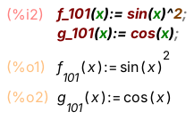
När innehållet i en inmatningscell beräknas ger Maxima
inmatningen en etikett som kan användas för att referera till den senare
i wxMaxima-sessionen. Etiketten visas som standard i rött och
känns igen på %i. Utdata från Maxima får också en
etikett, som börjar med %o och som normalt är dold om
användaren inte ger resultatet ett namn. I så fall visas som standard
den användardefinierade etiketten. Den automatiskt skapade
%o-etiketten går fortfarande att använda.
Utöver inmatningsceller erbjuder wxMaxima textceller för dokumentation, bildceller, titelceller, kapitelceller och avsnittsceller. Varje cell har en egen ångrahistorik, vilket gör det lätt att felsöka genom att ändra värden i flera celler och sedan stegvis ångra onödiga ändringar. Arbetsbladet har dessutom en gemensam ångrahistorik för redigering, tillägg och borttagning av celler.
Bilden nedan visar olika celltyper: titelceller, avsnittsceller, underavsnittsceller, textceller, inmatnings- och utdataceller samt bildceller.
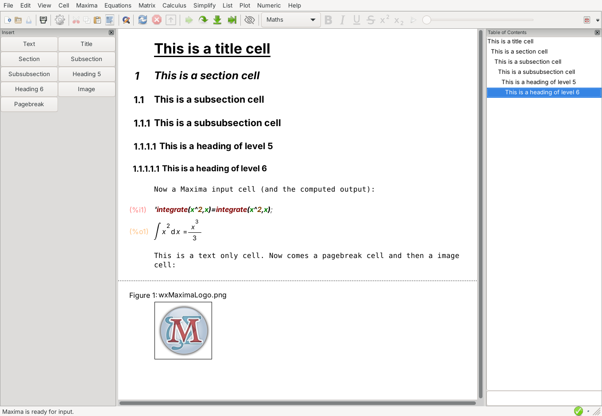
Arbetsbladet är indelat i celler. WxMaxima har följande celltyper:
När du skriver i wxMaxima skapas som standard en matematikcell automatiskt. Andra celltyper kan skapas med menyn Cell, kortkommandona i menyn eller listrutan i verktygsfältet. När en cell av en annan typ än matematik har skapats tolkas det du skriver som text.
En kommentar
i C-stil kan ingå i en matematikcell på följande sätt:
/* This comment will be ignored by Maxima */
“/*” markerar kommentarens början och “*/”
dess slut.
Om du försöker markera en hel mening i en ordbehandlare brukar programmet utöka markeringen så att den börjar och slutar vid ordgränser. På liknande sätt utökar wxMaxima markeringen till hela celler när du markerar fler än en cell.
Det som skiljer sig från det vanliga är att wxMaxima ger flexibilitet vid dra och släpp genom att använda två markörtyper. Programmet växlar automatiskt mellan dem efter behov:
När du startar wxMaxima syns bara den blinkande vågräta markören. Om
du börjar skriva skapas automatiskt en matematikcell och markören blir
en vanlig lodrät markör. En högerpil visas som prompt. När
matematikcellen har beräknats med CTRL+ENTER visas
etiketter, till exempel (%i1) och (%o1).
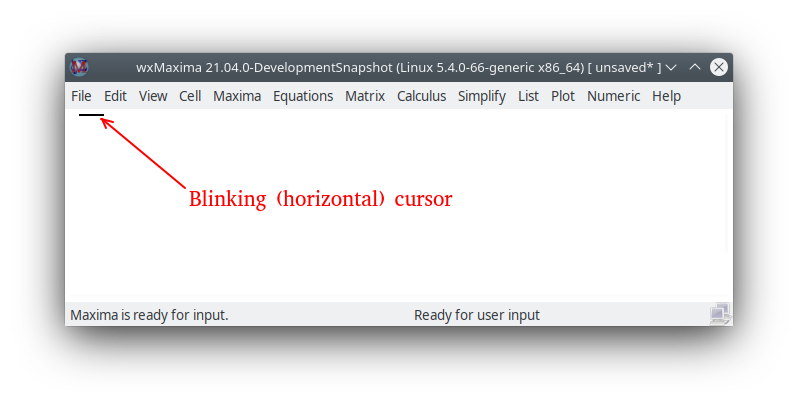
När du börjar skapa arbetsbladet kanske du vill välja en annan celltyp i menyn “Cell”, till exempel en titelcell eller en textcell som beskriver vad du ska göra.
När du rör dig mellan cellerna syns också den blinkande vågräta markören där du kan infoga en cell i arbetsbladet. Börja skriva en formel för att infoga en matematikcell eller välj en annan celltyp i menyn.
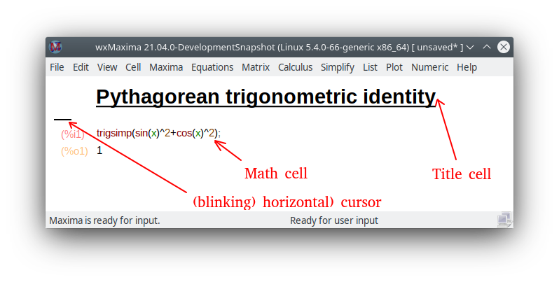
Kommandot i en kodcell körs när du trycker på CTRL+ENTER, SHIFT+ENTER eller ENTER på det numeriska tangentbordet. Som standard kör wxMaxima kommandon med CTRL+ENTER eller SHIFT+ENTER, men du kan ställa in programmet så att ENTER används.
WxMaxima har automatisk komplettering som aktiveras via menyn Cell/Komplettera ord eller med CTRL+SPACE. Kompletteringen anpassas efter sammanhanget. Om du till exempel aktiverar den i en enhetsangivelse för ezUnits visas en lista med lämpliga enheter.
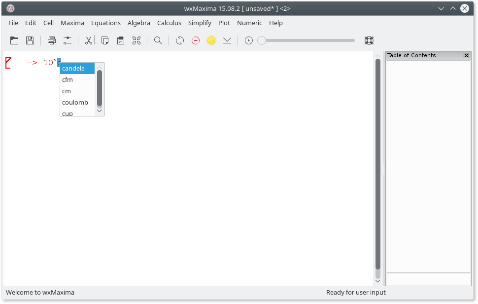
Utöver att komplettera filnamn, enhetsnamn och det aktuella kommando- eller variabelnamnet kan kompletteringsfunktionen visa mallar för de flesta kommandon. Mallarna anger typen och betydelsen för de parametrar som kommandot förväntar sig. Aktivera funktionen med SHIFT+CTRL+SPACE eller motsvarande menyval, Cell/Visa mall.
Datorer lagrade traditionellt tecken som 8-bitarsvärden. Det ger plats för högst 256 olika tecken. Bokstäver, siffror och styrtecken, till exempel överföringsslut, strängslut samt linjer och hörn för menyrektanglar, för nästan vilket enskilt språk som helst ryms inom denna gräns.
De teckentabeller med 256 tecken som har valts för de flesta länder saknar dock bland annat grekiska bokstäver, som används ofta i matematik. För att övervinna sådana begränsningar skapades Unicode, en kodning som låter engelsk text fungera som vanligt men gör betydligt fler än 256 tecken tillgängliga.
Maxima tillåter Unicode om programmet har byggts med en Lisp-kompilator som antingen stöder Unicode eller inte tar hänsyn till teckenkodningen. Åtminstone ett av dessa villkor är sannolikt uppfyllt. WxMaxima har ett sätt att mata in grekiska tecken med tangentbordet:
| tangent | Grekisk bokstav | tangent | Grekisk bokstav | tangent | Grekisk bokstav |
|---|---|---|---|---|---|
| a | alfa | i | jota | r | rho |
| b | beta | k | kappa | s | sigma |
| g | gamma | l | lambda | t | tau |
| d | delta | m | my | u | ypsilon |
| e | epsilon | n | ny | f | fi |
| z | zeta | x | xi | c | chi |
| h | eta | om | omikron | y | psi |
| q | theta | p | pi | o | omega |
| A | Alfa | I | Jota | R | Rho |
| B | Beta | K | Kappa | S | Sigma |
| G | Gamma | L | Lambda | T | Tau |
| D | Delta | M | My | U | Ypsilon |
| E | Epsilon | N | Ny | P | Fi |
| Z | Zeta | X | Xi | C | Chi |
| H | Eta | Om | Omikron | Y | Psi |
| T | Theta | P | Pi | O | Omega |
Du kan också använda sidopanelen “Grekiska bokstäver” för att mata in grekiska bokstäver.
Flera latinska bokstäver liknar grekiska bokstäver, till exempel latinskt “A” och grekiskt “alfa”. Trots att de ser likadana ut är de olika Unicode-tecken med olika kodpunkter (nummer).
Det kan orsaka problem om du tilldelar variabeln A ett värde och senare använder grekiskt alfa för att göra något med variabeln, särskilt i utskrifter. Även den grekiska bokstaven my, som används som prefix för mikro, har två olika Unicode-kodpunkter.
Sidopanelen “Grekiska bokstäver” har därför ett alternativ för att göra förväxlingsbara tecken otillgängliga. Du kan ändra detta i högerklicksmenyn.
På samma sätt kan du mata in vissa andra matematiska symboler:
| tangenter | matematisk symbol |
|---|---|
| hbar | Plancks konstant: h med ett vågrätt streck ovanför |
| Hbar | H med ett vågrätt streck ovanför |
| 2 | i kvadrat |
| 3 | upphöjt till tre |
| /2 | 1/2 |
| partial | tecken för partiell derivata (d i dx/dt) |
| integral | integraltecken |
| sq | kvadratrot |
| ii | imaginär |
| ee | element |
| in | i |
| impl implies | medför |
| inf | oändlighet |
| empty | tom |
| TB | stor triangel åt höger |
| tb | liten triangel åt höger |
| and | och |
| or | eller |
| xor | xor |
| nand | nand |
| nor | nor |
| equiv | ekvivalent med |
| not | inte |
| union | union |
| inter | snitt |
| subseteq | delmängd av eller lika med |
| subset | äkta delmängd |
| notsubseteq | inte delmängd av eller lika med |
| notsubset | inte äkta delmängd |
| approx | ungefär lika med |
| propto | proportionell mot |
| neq != /= or # | inte lika med |
| +/- or pm | plus/minus-tecken |
| <= or leq | mindre än eller lika med |
| >= or geq | större än eller lika med |
| << or ll | mycket mindre än |
| >> or gg | mycket större än |
| qed | bevisets slut |
| nabla | nablaoperator |
| sum | summatecken |
| prod | produkttecken |
| exists | tecken för det finns |
| nexists | tecken för det finns inte |
| parallel | parallelltecken |
| perp | tecken för vinkelrät |
| leadsto | tecken för leder till |
| -> | högerpil |
| –> | lång högerpil |
Du kan också använda sidopanelen “Symboler” för att mata in dessa matematiska symboler.
Om en symbol saknas i listan kan du mata in valfria Unicode-tecken genom att trycka på ESC [tecknets nummer (hexadecimalt)] ESC. Sidopanelen “Symboler” har även en högerklicksmeny som visar en lista över alla tillgängliga Unicode-symboler som kan läggas till i panelen eller arbetsbladet.
ESC61ESC ger alltså ett
a. Medan du skriver talet visar symbollistan vilket tecken
det motsvarar och tecknets Unicode-namn.
Om talet också är början på ett symbolnamn (be kan vara
början på beta eller tecknet ¾ med talet be)
har namnet företräde. Ett inledande 0 eller u+
anger att det är ett tal: både
ESCu+beESC och
ESC00beESC ger ett
¾.
En bokstav med ett diakritiskt tecken som saknar ett eget tecken i
Unicode, till exempel ett t med ett streck ovanför, skrivs som en
bokstav följd av ett ”kombinerande” diakritiskt tecken:
tESC304ESC
ger t̄, som Maxima behandlar som vilket annat
variabelnamn som helst.
Symboler som används ofta kan läggas till i sidopanelen ”Symboler” på fliken ”Alternativ” i inställningsdialogen (Redigera -> Inställningar). Där kan de också tilldelas en tangentgenväg. En bokstav med diakritiska tecken räknas där som en symbol och får en knapp. Även de grekiska bokstäverna och de symboler som redan visas i sidopanelerna kan tilldelas tangentgenvägar där, eller genom att högerklicka på deras knappar i sidopanelen. En tangentgenväg måste innehålla Ctrl eller Alt, eller vara en funktionstangent, och skriver sin symbol när arbetsbladet har tangentbordsfokus. Inställningsdialogen varnar om ett menyalternativ redan använder samma tangenter.
Observera att de flesta av dessa symboler, med de logiska symbolerna som viktiga undantag, inte har någon särskild betydelse i Maxima och därför tolkas som vanliga tecken. Om Maxima har byggts med en Lisp-miljö som inte stöder Unicode-tecken kan de orsaka ett felmeddelande.
Det valda typsnittet kanske saknar exempelvis grekiska tecken eller matematiska symboler. Då kan dessa inte visas. Välj andra typsnitt via Redigera -> Inställningar -> Stil för att lösa problemet.
wxMaxima ersätter flera Unicode-tecken med motsvarande
Maxima-uttryck, till exempel ² med ^2,
³ med ^3, ≠ med #
och ≤ med <=.
Unicode-tecken som motsvarar Maxima-namn definieras i stället som
alias för dessa namn i Maxima när wxMaxima startar
Maxima: π för %pi, ⅈ för
%i, ⅇ för %e, ∞ för
inf, det matematiska sigmatecknet (som inte är samma
Unicode-tecken som motsvarande grekiska bokstav) för sum,
∏ för product, ∫ för
integrate, kvadratrotstecknet för sqrt samt
⋀, ⋁, ⊻, ⊼,
⊽, ⇒, ⇔ och ¬ för
and, or, xor, nand,
nor, implies, equiv och
not. Det innebär att de även fungerar i filer som läses in
med batch() eller load(), och att
aliases listar namnen de motsvarar. Eftersom
Maxima läser dessa tecken som bokstäver måste de skiljas från
angränsande namn med blanksteg i en sådan fil: a⋀b är ett
variabelnamn, medan a ⋀ b betyder a and b. I
en inmatningscell lägger wxMaxima automatiskt till dessa blanksteg.
Programmet sätter också parenteser runt ett tal eller en variabel som
följer direkt efter kvadratrotstecknet, så √2 betyder
sqrt(2).
Unicode kodar flera vanliga bråk som en enda kodpunkt:
¼, ½, ¾, ⅐, ⅑, ⅒, ⅓, ⅔, ⅕, ⅖, ⅗, ⅘, ⅙, ⅚, ⅛, ⅜, ⅝, ⅞
wxMaxima ersätter dem med deras Maxima-representationer, till exempel
(1/4), innan indata skickas till Maxima. Det finns även
⅟, som ersätts med 1/, och ↉, som
används i baseboll och ersätts med (0/3).
Vi rekommenderar att du använder Maxima-kod i
stället för dessa Unicode-tecken i inmatningsceller. Dels kanske
typsnittet för matematikinmatning saknar tecknen, dels brukar ett
dokument sparat som wxm kunna läsas av Maxima på
kommandoraden, där dessa ersättningar inte görs. Tecknen kan dock
förekomma om du kopierar och klistrar in en formel från ett annat
dokument.
Via sidopanelerna får du tillgång till genvägar till de viktigaste Maxima-kommandona, en innehållsförteckning, felsökningsmeddelanden och historik över de senaste kommandona. Du kan aktivera panelerna i menyn “Visa”. Alla paneler kan flyttas till andra platser i eller utanför wxMaxima-fönstret. En annan praktisk panel låter dig mata in grekiska bokstäver med musen.
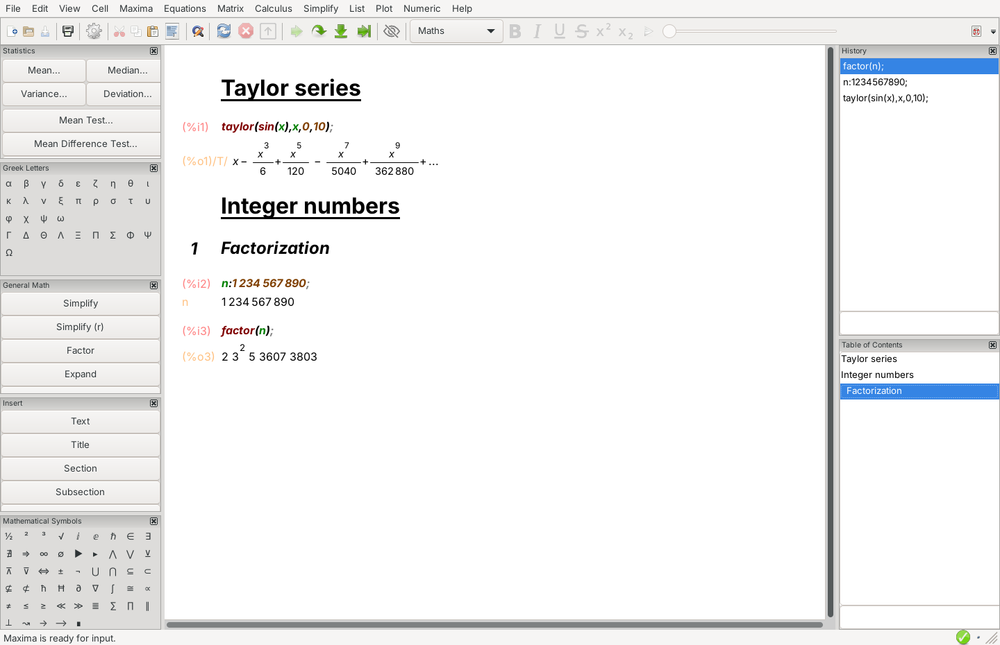
I sidopanelen “Innehållsförteckning” kan du höja eller sänka en rubriknivå genom att högerklicka på rubriken och välja nästa högre eller lägre rubriktyp.
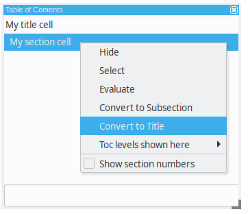
Flera ordbehandlare och liknande program känner igen MathML och infogar det automatiskt som en redigerbar tvådimensionell ekvation. Andra, till exempel LibreOffice, har en ekvationsredigerare med en funktion för att importera MathML från urklipp. Ytterligare andra stöder RTF-matematik. WxMaxima erbjuder därför flera alternativ i högerklicksmenyn.
Redigera → Klistra in LaTeX/MathML som Maxima-kod
(finns också i högerklicksmenyn) omvandlar en formel från urklipp till
ett Maxima-kommando, till exempel en formel som kopierats från
en artikel, en webbsida eller en ekvationsredigerare. LaTeX kan ha
$…$, \(…\) eller \[…\] runt sig,
men behöver inte ha det, så \int_0^1 \frac{\sin x}{x}\,dx
blir integrate(sin(x)/x,x,0,1). Kommandot infogas vid
markören eller i en ny kodcell. MathML som klistras in i en kodcell med
det vanliga kommandot Klistra in omvandlas på samma
sätt, eftersom XML-koden inte är vad man vill ha i en kodcell. Om MathML
som kopierats med Kopiera som MathML klistras in igen
blir resultatet det ursprungliga kommandot: wxMaxima lägger
till det i MathML-koden som en annotation.
LaTeX och MathML beskriver hur en formel ser ut, inte vad den
betyder, så omvandlingen måste tolka den. Bråk, rötter, potenser,
nedsänkta tecken (x_1 blir namnet x_1,
a_{n+1} arrayelementet a[n+1]), funktioner med
eller utan parenteser (\sin 2x), \frac{d}{dx},
f'(x), integraler som slutar med dx, summor
och produkter med gränser, \lim_{x\to 0}, |x|
och matriser kan tolkas. Ett e är Eulers tal, men ett
i är bara den imaginära enheten när det är upprätt
(\mathrm{i}), eftersom det oftare är ett index. Ett namn
följt av en parentes, som x(y+1), tolkas som en produkt om
namnet inte är f, g, h eller
längre än en bokstav. För sådant som saknar en entydig betydelse, som
\pm, \dots eller text, görs inga gissningar:
wxMaxima anger i stället vad som inte kunde omvandlas.
Kontrollera kommandot innan du beräknar det.
WxMaxima stöder vissa vanliga Markdown-konventioner som inte krockar med matematisk notation. Ett exempel är punktlistor.
Vanlig text
* En punkt på indragsnivå 1
* En annan punkt på indragsnivå 1
* En punkt på andra indragsnivån
* En andra punkt på andra indragsnivån
* En tredje punkt på första indragsnivån
Vanlig textWxMaxima känner igen text som börjar med >
som blockcitat:
Vanlig text
> citat citat citat citat
> citat citat citat citat
> citat citat citat citat
Vanlig textWxMaximas TeX- och HTML-export känner också igen
=> och ersätter det med motsvarande Unicode-tecken:
cogito => sum.Andra symboler som HTML- och TeX-exporten känner igen är
<= och >= för jämförelser, en
dubbelriktad dubbelpil (<=>), enkla pilar
(<->, -> och <-) samt
+/- för plus/minus-tecknet. Vid TeX-export känns även
<< och >> igen.
En webbadress i en textcell som börjar med http://,
https:// eller mailto: visas som en länk.
Eftersom ett klick i en textcell placerar markören där, öppnar du en
länk genom att CTRL+klicka på den (CMD+klicka på
macOS) eller genom att högerklicka och välja ”Öppna länk”. När du håller
pekaren över länken visas vart den leder. Vid HTML-export skapas en länk
och vid TeX-export en \url{}. Länkar känns alltid igen
utifrån själva texten, så ingen information om dem sparas i filen.
Länkar i kommentarer i en kodcell (/* ... */) fungerar
på samma sätt. På andra ställen i koden, till exempel i en sträng, är en
adress Maxima-syntax och ingen länk.
Detsamma gäller webbadresser i Maximas utdata, till exempel
i en sträng som skrivs ut med
print("See https://wxmaxima-developers.github.io/wxmaxima/"):
CTRL+klicka på adressen eller välj ”Öppna länk” i dess
snabbmeny för att öppna den. Ett vanligt klick markerar fortfarande
utdata.
Text i en textcell, en titel eller en avsnittsrubrik kan göras fet, kursiv, understruken eller genomstruken. Markera texten och tryck på motsvarande knapp i verktygsfältet. Tryck på knappen igen för att ta bort formateringen från markeringen. Om inget är markerat aktiverar eller inaktiverar knappen formateringen för den text som skrivs härnäst. Knapparna kan döljas genom att högerklicka på verktygsfältet och avmarkera ”Knappar för textformatering”. Kodceller kan inte formateras: deras färger visar redan kodens syntax.
Knapparna för upphöjd och nedsänkt text fungerar på samma sätt: de gör texten mindre och höjer eller sänker den i förhållande till baslinjen, som i E = mc² eller H₂O. Ett tecken kan inte vara både upphöjt och nedsänkt, så när det ena aktiveras inaktiveras det andra. En rad som innehåller upphöjd eller nedsänkt text, eller ett tecken som är högre än typsnittets vanliga tecken, till exempel en emoji, får så mycket extra utrymme som behövs.
Formateringen sparas i .wxmx-filer. Äldre versioner av
wxMaxima öppnar sådana filer utan formateringen men behåller
all text. .wxm-filer, exporter och urklipp innehåller
texten utan formatering.
De flesta kortkommandon visas i respektive meny. Eftersom de hämtas från menytexten kan de anpassas i översättningen av wxMaxima efter det lokala tangentbordet. Därför dokumenterar vi dem inte här. Några kortkommandon eller alternativa kortkommandon visas dock inte i menyerna:
En cells utdata kan markeras och utforskas del för del utan mus:
Om en textcell börjar med TeX: innehåller TeX-exporten
texten efter markören TeX: ordagrant. Med den funktionen
kan du använda TeX-kod i wxMaxima-arbetsboken.
Material som skapas under en wxMaxima-session kan sparas för senare användning på tre sätt:
.mac-filer är vanliga textfiler med
Maxima-kommandon. De kan läsas med Maximas kommandon
batch() eller load() eller med menyvalet
Arkiv/Kommandofil i wxMaxima.
Ett exempel visas nedan. Quadratic.mac definierar en
funktion och skapar sedan ett diagram med wxdraw2d().
Därefter skrivs innehållet i filen Quadratic.mac ut och den
nydefinierade funktionen f() beräknas.
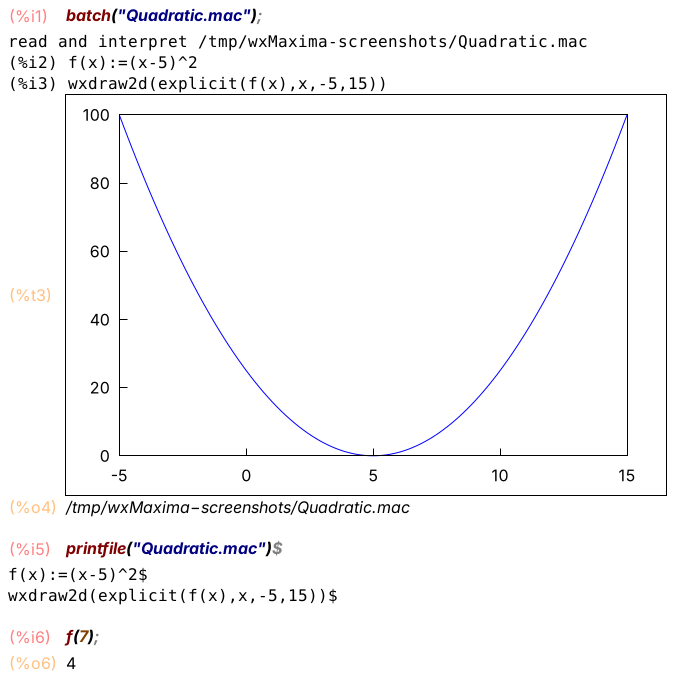
Observera: Filen Quadratic.mac har en vanlig
Maxima-filändelse (.mac), men kan ändå bara
användas som avsett i wxMaxima, eftersom
wxdraw2d() är ett wxMaxima-tillägg till Maxima.
Maxima på kommandoraden ignorerar det okända kommandot
wxdraw2d() och skriver ut det oförändrat som resultat.
Du kan använda .mac-filer för att skapa ett eget
makrobibliotek. De innehåller dock inte tillräckligt med
strukturinformation för att kunna läsas tillbaka som en
wxMaxima-session.
.wxm-filer innehåller arbetsbladet utan Maximas
utdata. I Maxima-versioner >5.38 kan de läsas med funktionen
load(), precis som .mac-filer. Nästan, åtminstone: frågor
som asksign(x) är problematiska eftersom svaret skrivs i
.wxm-filen för att kunna föreslås efter inläsning, men
Maxima kan inte beräkna det. Du kan förhindra att Maxima ställer frågor
genom att använda assume() för att ange de egenskaper som
Maxima behöver känna till.
Med detta textformat är det ibland oundvikligt att arbetsblad som använder nya funktioner inte är bakåtkompatibla med äldre versioner av wxMaxima.
Det är en vanlig textfil, som kan öppnas i en textredigerare, där cellinnehållet avgränsas av särskilda Maxima-kommentarer.
Filen börjar med följande kommentar:
/* [wxMaxima batch file version 1] [ DO NOT EDIT BY HAND! ]*/
/* [ Created with wxMaxima version 24.02.2_DevelopmentSnapshot ] */Därefter följer cellerna, kodade som Maxima-kommentarer, till exempel en avsnittscell:
/* [wxMaxima: section start ]
Title of the section
[wxMaxima: section end ] */eller (i en matematikcell är indata förstås inte
bortkommenterade; utdata sparas inte i en wxm-fil):
/* [wxMaxima: input start ] */
f(x):=x^2+1$
f(2);
/* [wxMaxima: input end ] */Bilder är Base64-kodade och har bildtypen på första raden:
/* [wxMaxima: image start ]
jpg
[very chaotic looking character sequence]
[wxMaxima: image end ] */En sidbrytning består bara av en rad med:
/* [wxMaxima: page break ] */Hopfällda celler markeras med:
/* [wxMaxima: fold start ] */
...
/* [wxMaxima: fold end ] */Detta XML-baserade filformat sparar hela arbetsbladet, inklusive zoomfaktor och bevakningslista. Det är det rekommenderade filformatet.
En wxmx-fil ser ut att ha ett binärt format, men kan
hanteras med verktyg som finns i operativsystemet. Det är en zip-fil som
kan packas upp med unzip. Du kan behöva byta namn på filen
först så att operativsystemets uppackningsprogram känner igen den. Vi
använder inte komprimeringsfunktionen, utan bara möjligheten att samla
flera filer i en. Bilderna är redan komprimerade och resten är vanlig
text, som oftast tar betydligt mindre plats än stora infogade
bilder.
Filen innehåller följande:
mimetype: filen innehåller MIME-typen för
wxMaxima-filer: text/x-wxmathmlformat.txt: en kort beskrivning av wxMaxima och
filformatet wxmxcontent.xml: ett XML-dokument som innehåller
dokumentets olika celler i XML-format.Om något går fel kan du alltså packa upp ett wxMaxima-dokument, vid
behov efter att ha bytt filändelse till zip, redigera
content.xml med en textredigerare eller ersätta en skadad
bild, packa ihop filerna igen och byta filändelsen från zip
tillbaka till wxmx. Då får du en ändrad
wxmx-fil.
För vissa vanliga inställningsvariabler erbjuder wxMaxima två sätt att ändra värden:
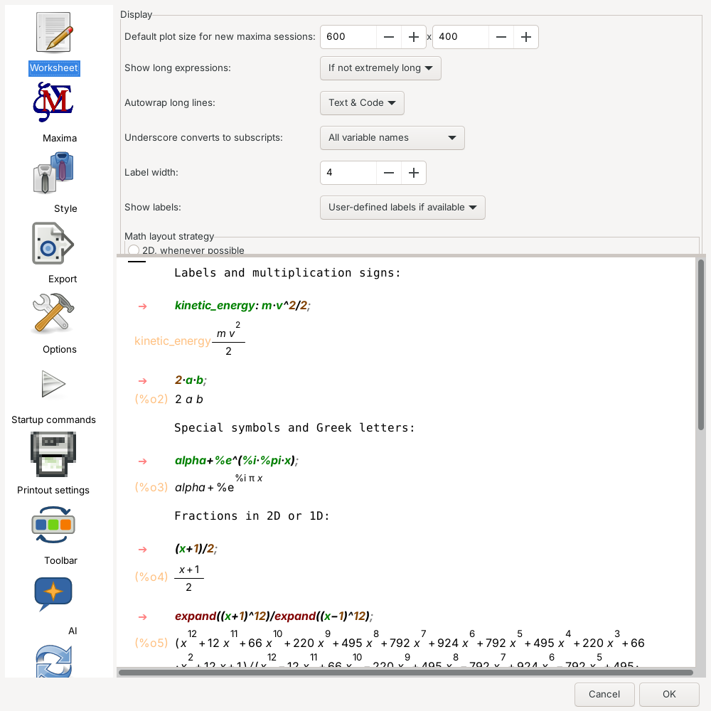
Bildfrekvensen för nya animeringar lagras i variabeln
wxanimate_framerate. Det ursprungliga värdet på variabeln i
ett nytt arbetsblad kan ändras i inställningsdialogrutan.
Efter nästa start skapas diagram som bäddas in i arbetsbladet med
denna storlek, om inte Maxima ändrar värdet på
wxplot_size.
För att ange storleken på bara ett enskilt diagram kan du använda följande notation, som ändrar en variabels värde endast för ett kommando:
wxdraw2d(
explicit(
x^2,
x,-5,5
)
), wxplot_size=[480,480]$Alternativet aktiverar två funktioner:
/* av
ett automatiskt infogat */. Om du skriver */
framför det flyttas markören i stället förbi det.Om detta alternativ är valt skrivs arbetsbladets fil över bara på användarens begäran. Vid en krasch, ett strömavbrott eller liknande finns ändå en aktuell säkerhetskopia i den temporära katalogen.
Om alternativet inte är valt fungerar wxMaxima mer som en modern mobilapp:
Verktygsfältet består av avsnitt, till exempel knapparna ”Öppna” och ”Spara”, beräkningsknapparna och listrutan för celltyp. Fliken ”Verktygsfält” i inställningsdialogen visar dem i samma ordning som verktygsfältet: dra ett avsnitt till en annan plats eller markera det och tryck på ”Upp” eller ”Ned” för att flytta det. Avmarkera det för att dölja det. Det flexibla mellanrummet skjuter alla efterföljande avsnitt till fönstrets högra kant. ”Standardordning” återställer den ursprungliga ordningen. Avsnitt kan också visas eller döljas genom att högerklicka på verktygsfältet.
På Unix/Linux sparas inställningarna i filen .wxMaxima i
hemkatalogen om du använder wxWidgets < 3.1.1, eller i
.config/wxMaxima.conf enligt XDG-standarden om wxWidgets
>= 3.1.1 används. Du kan se wxWidgets-versionen med kommandot
wxbuild_info(); eller menyvalet Hjälp->Om. wxWidgets är det
plattformsoberoende bibliotek för grafiska gränssnitt som
wxMaxima bygger på, därav wx i namnet. Eftersom
namnet börjar med en punkt är .wxMaxima respektive
.config dolt.
På Windows sparas inställningarna i registret. Posterna för
wxMaxima finns under
HKEY_CURRENT_USER\Software\wxMaxima.
WxMaxima är i första hand ett grafiskt gränssnitt för Maxima. Huvuduppgiften är därför att vidarebefordra kommandon till Maxima och visa resultaten. I vissa fall utökar dock wxMaxima funktionaliteten i Maxima. Möjligheten att skapa rapporter genom att exportera arbetsbokens innehåll till HTML- och LaTeX-filer har redan nämnts. Detta avsnitt beskriver några sätt som wxMaxima förbättrar stödet för grafik i en session.
wxsubscripts anger om och hur wxMaxima
automatiskt ska visa delar av variabelnamn som nedsänkta index:
Om värdet är false är funktionen avstängd och wxMaxima
sänker inte automatiskt ned den del av ett variabelnamn som följer efter
ett understreck.
Om värdet är 'all visas allt efter ett understreck som
nedsänkt index.
Om värdet är true visas variabelnamn på formen
x_y med nedsänkt index om
x eller y är en enda bokstav,
ellery är ett heltal (som kan innehålla flera tecken).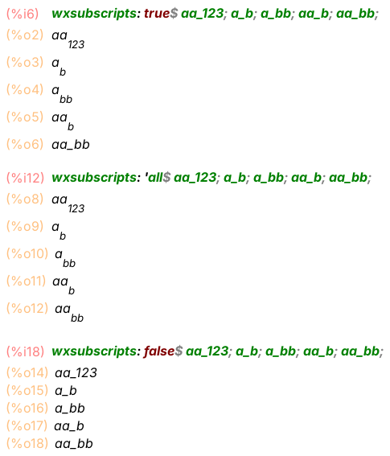
En variabel som inte omfattas av reglerna ovan kan ändå anges som
”ska ha nedsänkta tecken” med kommandot
wxdeclare_subscripted(variable_name); eller
wxdeclare_subscripted([variable_name1,variable_name2,...]);
Detta kan återställas med följande kommando:
wxdeclare_subscripted(variable_name,false);, som också
förhindrar nedsänkning för en variabel som omfattas av reglerna
ovan.
wxdeclare_subscript(text_snippet); eller
wxdeclare_subscript([text_snippet1,text_snippet2,...]);
anger i stället ett textfragment: varje variabel vars namn slutar med
ett understreck följt av detta fragment visas med nedsänkt text, oavsett
hur långa de två delarna är.
Du kan ange dessa värden via menyn “Visa->Automatisk nedsänkning”.
Kommandon som tar lång tid kan ge användaren återkoppling i
statusfältet. Ny återkoppling ersätter den tidigare, så att fältet kan
användas som förloppsindikator. Meddelandet tas bort så snart det
aktuella kommandot till Maxima är klart. Det är säkert att
använda wxstatusbar() även i bibliotek som kan komma att
användas i vanligt Maxima utan wxMaxima. Om
wxMaxima saknas lämnas kommandot wxstatusbar()
helt enkelt oberäknat.
for i:1 thru 10 do (
/* Tell the user how far we got */
wxstatusbar(concat("Pass ",i)),
/* (sleep n) is a Lisp function, which can be used */
/* with the character "?" before. It delays the */
/* program execution (here: for 3 seconds) */
?sleep(3)
)$Kommandot wxworksheettohtml() exporterar det aktuella
arbetsbladet till en HTML-fil inifrån en pågående
Maxima-session. Det är praktiskt vid skriptstyrd export eller
satsvis export. Liksom wxstatusbar() kan det användas
säkert i kod som även kan köras i Maxima på konsolen. Om
wxMaxima saknas lämnas kommandot helt enkelt oberäknat.
wxworksheettohtml("report.html")$
wxworksheettohtml("report.html", flavor="svg", wxmx=true)$Ett relativt filnamn tolkas i förhållande till Maximas arbetskatalog. Följande namngivna alternativ kan anges:
| alternativ | värden | betydelse |
|---|---|---|
flavor |
mathml (standard), mathjax,
svg, bitmap |
hur ekvationerna återges på den exporterade sidan |
wxmx |
false (standard), true |
bädda in en nedladdningsbar .wxmx-kopia av
sessionen |
Bilderna och .wxmx-kopian sparas i en mapp med samma
namn som HTML-filen, följt av _htmlimg. Om ”Bädda in bilder
i .html-filen” är markerat på fliken Exportera i inställningsdialogen
bäddas de i stället in i HTML-filen, så att den kan skickas som en enda
fil via e-post.
Värdena för flavor motsvarar ekvationsformaten i
dialogrutan Arkiv → Exportera. mathml
skapar en fristående sida som inte kräver internetanslutning,
mathjax lägger till MathJaX som reservlösning för
webbläsare som ännu saknar MathML, och
svg/bitmap återger varje ekvation som en
bild.
Det motsvarande kommandot wxworksheettotex() exporterar
till en LaTeX-fil (.tex) på samma sätt:
wxworksheettotex("report.tex")$
wxworksheettotex("report.tex", documentclass="report", documentclassoptions="12pt,a4paper")$| alternativ | betydelse |
|---|---|
documentclass |
åsidosätter LaTeX-kommandot \documentclass (t.ex.
"article", "report") |
documentclassoptions |
åsidosätter dess alternativ (t.ex. "12pt,a4paper") |
Stöd för wxworksheettopdf() planeras.
Diagramritning är till sin natur grafisk, och därför är det ett område där ett grafiskt användargränssnitt behöver utöka det ursprungliga programmet.
Maxima instruerar normalt det externa programmet Gnuplot att öppna ett separat fönster för varje diagram. Ofta är det mer praktiskt att bädda in diagrammen i arbetsbladet. Därför erbjuder wxMaxima egna diagramfunktioner som bara skiljer sig från motsvarande funktioner i Maxima genom namnet: de börjar alla med ”wx”.
Följande diagramfunktioner har wx-motsvarigheter:
| Diagramfunktion i wxMaxima | Diagramfunktion i Maxima |
|---|---|
wxplot2d() |
plot2d |
wxplot3d() |
plot3d |
wxdraw2d() |
draw2d |
wxdraw3d() |
draw3d |
wxdraw() |
draw |
wximplicit_plot() |
implicit_plot |
wxhistogram() |
histogram |
wxscatterplot() |
scatterplot |
wxbarsplot() |
barsplot |
wxpiechart() |
piechart |
wxboxplot() |
boxplot |
Om en wxm-fil läses av Maxima på konsolen ignoreras
dessa funktioner och skrivs ut som resultat, precis som andra okända
funktioner i Maxima.
Om du får problem med någon av funktionerna bör du kontrollera om
problemet också finns i motsvarande Maxima-funktion. Om
wxplot2d() ger ett fel kan du till exempel prova samma
diagram med Maxima-kommandot plot2d(), som öppnar det i ett
separat fönster. Om problemet kvarstår är det troligen ett fel i Maxima
som bör rapporteras i Maximas
felrapporteringssystem. Det kan också vara ett fel i Gnuplot.
Som nämnts ovan kan du ändra standardstorleken för diagram i
inställningsdialogrutan. Det anger startvärdet för
wxplot_size. WxMaximas diagramrutiner använder
denna variabel för diagramstorleken i bildpunkter. Du kan när som helst
läsa dess värde eller ändra det för kommande diagram:
wxplot_size:[1200,800]$
wxdraw2d(
explicit(
sin(x),
x,1,10
)
)$Om du bara vill ändra storleken på ett diagram har Maxima
ett etablerat sätt att ändra en egenskap enbart för den aktuella cellen.
Ange wxplot_size = [value1, value2] efter kommandot
wxdraw2d( ), alltså inte som en del av själva
wxdraw2d-kommandot.
wxdraw2d(
explicit(
sin(x),
x,1,10
)
),wxplot_size=[1600,800]$Du kan ange storleken med wxplot_size för inbäddade
diagram skapade med exempelvis wxplot, wxdraw,
wxcontour_plot och wximplicit_plot, samt för
inbäddade animeringar skapade med with_slider_draw och
wxanimate.
wxplot_size anger hur många bildpunkter Gnuplot
ska rita. Om ett diagram är bredare än fönstret förminskar
wxMaxima det tills det ryms. Om ett visst diagram ska visas
större, även om det då inte längre ryms på skärmen, eller mindre, anger
variabeln wxplot_scale (standardvärde: 1) hur
många gånger så stort wxMaxima ska visa det jämfört med den
vanliga storleken:
wxdraw2d(
explicit(
sin(x),
x,1,10
)
),wxplot_scale=2$Till skillnad från ett större wxplot_size, som gör text
och linjer mindre i förhållande till diagrammet, gör
wxplot_scale allt större, inklusive texten. Faktorn sparas
i arbetsbladet tillsammans med diagrammet och bevaras därför när filen
sparas och öppnas igen. Den används av samma kommandon som
wxplot_size. Om wxMaxima visar diagram som skalbar
vektorgrafik (se ”Skapa skalbara diagram” i inställningsdialogen)
förblir de skarpa oavsett skala. Ett bitmappsdiagram blir däremot
suddigt om det förstoras mycket.
Ett diagram som ska vara brett men inte högt, till exempel en
vågform, skapas lämpligen med wxplot_size: ett bredare
wxplot_size ger mer plats för data med oförändrad höjd och
textstorlek. Eftersom ett sådant diagram normalt förminskas för att
rymmas i fönstret, vilket gör texten liten igen, kan
wxplot_scale='native användas för att låta
wxMaxima visa diagrammet i exakt den storlek som
wxplot_size anger, även om det är bredare än fönstret:
wxdraw2d(
explicit(
sin(10*x)*exp(-x/3),
x,0,10
)
),wxplot_size=[1600,300],wxplot_scale='native$Gnuplot verkar sakna ett plattformsoberoende sätt att avgöra
om det stöder den högkvalitativa bitmappsutdata som Cairo-biblioteket
erbjuder. På system där Gnuplot har byggts med detta bibliotek
aktiverar alternativet pngCairo i inställningsmenyn stöd för
kantutjämning och ytterligare linjestilar. Alternativet kan åsidosättas
med variabeln wxplot_pngcairo. Om
wxplot_pngCairo är aktiverat utan stöd i Gnuplot
blir resultatet felmeddelanden i stället för grafik.
Om ett diagram skapats med kommandon av typen wxdraw och
det underliggande Gnuplot-projektet inte är för stort kan du
via wxMaximas högerklicksmeny öppna diagrammet i ett
interaktivt Gnuplot-fönster. Funktionen stöder inte
wxplot2d och wxplot3d.
plot-fönsterPå Microsoft Windows finns två Gnuplot-program:
gnuplot.exe och wgnuplot.exe. Du kan välja
vilket kommando som ska användas i inställningsmenyn.
wgnuplot.exe kan öppna ett konsolfönster där du kan ange
gnuplot-kommandon, vilket gnuplot.exe inte kan.
Tyvärr gör wgnuplot.exe också att Gnuplot
kortvarigt tar tangentbordsfokus varje gång ett diagram förbereds.
Det kan vara svårt att läsa av kvantitativa data i 3D-diagram. Ett
alternativ är att låta mushjulet styra den tredje parametern. Kommandot
with_slider_draw är en variant av wxdraw2d som
förbereder flera diagram och låter dig växla mellan dem med
skjutreglaget högst upp på skärmen. WxMaxima kan exportera
animeringen som en animerad gif-bild.
De två första argumenten till with_slider_draw är namnet
på variabeln som ändras mellan diagrammen och en lista med variabelns
värden. Därefter följer de vanliga argumenten till
wxdraw2d:
with_slider_draw(
f,[1,2,3,4,5,6,7,10],
title=concat("f=",f,"Hz"),
explicit(
sin(2*%pi*f*x),
x,0,1
),grid=true
);Motsvarande funktion för 3D-diagram heter
with_slider_draw3d och gör det möjligt att rotera
3D-diagram:
wxanimate_autoplay:true;
wxanimate_framerate:20;
with_slider_draw3d(
α,makelist(i,i,1,360,3),
title=sconcat("α=",α),
surface_hide=true,
contour=both,
view=[60,α],
explicit(
sin(x)*sin(y),
x,-π,π,
y,-π,π
)
)$Om det viktigaste är diagrammets övergripande form kan det räcka att röra det lite för att ge en intuitiv uppfattning om den tredimensionella formen:
wxanimate_autoplay:true;
wxanimate_framerate:20;
with_slider_draw3d(
t,makelist(i,i,0,2*π,.05*π),
title=sconcat("α=",α),
surface_hide=true,
contour=both,
view=[60,30+5*sin(t)],
explicit(
sin(x)*y^2,
x,-2*π,2*π,
y,-2*π,2*π
)
)$with_slider_draw och with_slider_draw3d
skapar varje bildruta av en enda 2D- eller 3D-scen.
with_slider_draw_bare skickar i stället argumenten efter
variabeln och dess värden till ett vanligt draw-kommando.
Varje bildruta kan därför bestå av flera gr2d- och
gr3d-scener, och globala alternativ för draw,
som columns och dimensions, kan också
användas:
with_slider_draw_bare(
f,[1,2,3,4,5],
columns=2,
gr2d(
title=concat("f=",f),
explicit(sin(f*x),x,0,2*π)
),
gr3d(
explicit(sin(f*x)*cos(y),x,0,2*π,y,0,2*π)
)
);Liksom with_slider_draw accepterar
with_slider_draw_bare alternativet
file_name="name", som sparar animeringen som
name.gif i Maximas arbetskatalog. Eftersom
draw inte kan omvandla en bildruta med flera scener till en
enda GIF-bildruta sätter wxMaxima samman GIF-filen av de bildrutor som
visas, och animeringen visas fortfarande i arbetsbladet. GIF-filen
skrivs bara när kommandot beräknas i wxMaxima.
För dig som är mer van vid plot än vid draw
finns ytterligare två funktioner:
with_slider ochwxanimate.Normalt spelas animeringar upp eller exporteras med den bildfrekvens
som valts i wxMaximas inställningar. För att ange
uppspelningshastigheten för en viss animering kan du använda variabeln
wxanimate_framerate:
wxanimate(a, 10,
sin(a*x), [x,-5,5]), wxanimate_framerate=6$Animeringsfunktionerna använder Maximas kommando
makelist och har därför samma begränsning:
skjutreglagevariabelns värde sätts in i uttrycket bara om variabeln är
direkt synlig i det. Följande exempel fungerar därför inte:
f:sin(a*x);
with_slider_draw(
a,makelist(i/2,i,1,10),
title=concat("a=",float(a)),
grid=true,
explicit(f,x,0,10)
)$Om du uttryckligen ber Maxima att sätta in skjutreglagets värde fungerar diagramritningen:
f:sin(a*x);
with_slider_draw(
b,makelist(i/2,i,1,10),
title=concat("a=",float(b)),
grid=true,
explicit(
subst(a=b,f),
x,0,10
)
)$Denna funktion kommer från Maxima snarare än wxMaxima och kan ibland vara användbar på system som stöder den. Följande exempel kommer från ett inlägg av Mario Rodriguez på Maximas sändlista:
load(draw);
/* Parabola in window #1 */
draw2d(terminal=[wxt,1],explicit(x^2,x,-1,1));
/* Parabola in window #2 */
draw2d(terminal=[wxt,2],explicit(x^2,x,-1,1));
/* Paraboloid in window #3 */
draw3d(terminal=[wxt,3],explicit(x^2+y^2,x,-1,1,y,-1,1));Det går också att rita flera diagram i samma fönster. Detta fungerar
även i Maxima på kommandoraden med standardkommandot
draw():
wxdraw(
gr2d(
key="sin (x)",grid=[2,2],
explicit(sin(x),x,0,2*%pi)),
gr2d(
key="cos (x)",grid=[2,2],
explicit(cos(x),x,0,2*%pi))
);Sidopanelen “Rita med draw” innehåller en enkel kodgenerator som låter dig skapa scener med en del av flexibiliteten i paketet draw, som följer med Maxima.
Skapar stommen till ett draw()-kommando som ritar en
2D-scen. Scenen måste sedan fyllas med kommandon som skapar innehållet,
exempelvis med knapparna under knappen “2D”.
En användbar egenskap hos 2D-knappen är att den kan skapa scenen som en animering där en variabel, normalt t, har olika värde i varje bildruta. Ett rörligt 2D-diagram är ofta lättare att tolka än ett stillastående 3D-diagram med samma data.
Skapar stommen till ett draw()-kommando som ritar en
3D-scen. Om ingen 2D- eller 3D-scen har skapats skapar övriga knappar en
2D-scen med det kommando som knappen genererar.
Lägger till ett vanligt diagram för ett uttryck som
sin(x), x*sin(x) eller x^2+2*x-4
i det draw()-kommando där markören står. Om det inte finns
något draw-kommando skapas en 2D-scen med diagrammet. Varje scen kan
innehålla valfritt antal diagram.
Försöker hitta alla punkter där ett uttryck som
y=sin(x), y*sin(x)=3 eller
x^2+y^2=4 är sant och ritar den resulterande kurvan i det
draw()-kommando där markören står. Om det inte finns något
draw-kommando skapas en 2D-scen med diagrammet.
Stegar en variabel från en undre till en övre gräns och använder
uttryck som t*sin(t) och t*cos(t) för att
skapa x- och y-koordinater, samt z-koordinater i 3D-diagram, för en
kurva i det aktuella draw-kommandot.
Ritar många punkter som också kan förbindas. Punktkoordinaterna hämtas från en lista med listor, en tvådimensionell array eller en separat lista eller array för varje axel.
Ritar en titel högst upp i diagrammet.
Ställer in axlarna.
Endast för 3D-diagram: lägger till nivåkurvor, liknande höjdkurvor på
en karta, för de efterföljande diagramkommandona i det aktuella
draw()-kommandot och/eller på diagrammets basplan. Guiden
kan också dölja själva ytan och enbart visa nivåkurvorna.
Lägger till en post med nästa diagrams namn i teckenförklaringen. Ett tomt namn stänger av nya poster i teckenförklaringen för efterföljande diagram.
Anger linjefärgen för efterföljande diagram i det aktuella draw-kommandot.
Anger fyllningsfärgen för efterföljande diagram i det aktuella draw-kommandot.
Öppnar en guide där du kan ange rutnätslinjer.
Låter dig välja en lämplig avvägning mellan hastighet och noggrannhet, som i alla diagramprogram.
Särskilt på en skärm med hög upplösning kan standardtextstorleken
vara mycket liten. För kommandon baserade på draw kan du
ange typsnitt och textstorlek med alternativ som font=...
och font_size=..., till exempel:
wxdraw2d(
font="Helvetica",
font_size=30,
explicit(sin(x),x,1,10));För plot-kommandon, till exempel wxplot2d
och wxplot3d, kan typsnitt och textstorlek anges med
gnuplot_preamble, till exempel:
wxplot2d(sin(x),[x,1,10],
[gnuplot_preamble, "set tics font \"Arial, 30\"; set xlabel font \",20\"; set ylabel font \",20\";"]);Detta anger Arial med storlek 30 för talen och storlek 20 för xlabel och ylabel, med standardtypsnittet.
Mer information finns i dokumentationen för Maxima och Gnuplot. Observera att Gnuplot verkar ha problem med större textstorlekar; se wxMaxima-ärende 1966.
Om filformatet .wxmx används kan du bädda in filer i ett
wxMaxima-projekt genom att dra och släppa dem. Ibland är det
dock bättre att låta bilden läsas in vid beräkning, till exempel om
bildens innehåll kan ändras senare under sessionen:
show_image("man.png");I wxMaximas inställningsdialogruta kan du redigera två filer med kommandon som körs vid start:
maxima-init.mac.wxmaxima-init.mac.Om Gnuplot exempelvis är installerat i /opt, vilket kan
förekomma på macOS, kan du lägga till
gnuplot_command:"/opt/local/bin/gnuplot"$ i dessa filer.
Använd /opt/gnuplot/bin/gnuplot eller någon annan sökväg om
det är där programmet finns.
Filerna finns i Maximas användarkatalog, normalt
%USERPROFILE%/maxima på Windows och
$HOME/.maxima på andra system. Du kan ta reda på platsen
med kommandot maxima_userdir;.
wxsubscripts anger om Maxima ska omvandla
variabelnamn med understreck, till exempel R_150, till
variabler med nedsänkta index. Se wxdeclare_subscript för
information om vilka namn som omvandlas automatiskt.wxfilename: variabeln innehåller namnet på filen som är
öppen i wxMaxima.wxdirname: variabeln innehåller namnet på katalogen där
filen som är öppen i wxMaxima finns.wxplot_pngcairo anger om wxMaxima försöker
använda Gnuplots pngcairo-terminal, som ger fler linjestilar
och bättre grafikkvalitet.wxplot_size anger upplösningen för inbäddade
diagram.wxchangedir: på de flesta operativsystem ställer
wxMaxima automatiskt in Maximas arbetskatalog till den
aktuella filens katalog. Då fungerar filinläsning och filskrivning, till
exempel med read_matrix, utan att du behöver ange hela
sökvägen. På Windows orsakar detta ibland felmeddelanden, och funktionen
kan därför stängas av med värdet false i
inställningsdialogrutan.wxanimate_framerate: antalet bildrutor per sekund för
efterföljande animeringar.wxanimate_autoplay: ska animeringar spelas upp
automatiskt som standard?wxmaximaversion: returnerar versionsnumret för
wxMaxima.wxwidgetsversion: returnerar wxWidgets-versionen som
wxMaxima använder.wxdirs: en struktur med de sökvägar som
wxMaxima använder. Dessa varierar mellan paketerare,
distributioner och operativsystem:
wxdirs@userconfdir: katalogen där användarens
inställningar sparas. Det är samma katalog som
maxima_userdir ovan. Båda pekar på samma plats, och
wxdirs@userconfdir är bara användbar om den är enklare att
nå från en .mac-fil än variabeln på Maxima-sidan.wxdirs@datadir: katalogen där wxMaximas egna
data, till exempel ikoner och den inbyggda kompletteringslistan, är
installerade.wxdirs@helpdir: katalogen där den lokala kopian av
denna handbok är installerad.wxdirs@localedir: katalogen där wxMaximas
översättningsfiler är installerade.wxdirs@maximalocation: sökvägen till den körbara
Maxima-fil som wxMaxima är inställt på att
starta.Funktionen table_form() visar en tvådimensionell lista i
ett mer lättläst format än Maximas vanliga utdatarutin. Indata
är en lista med en eller flera listor. Liksom kommandot “print” visar
detta kommando utdata även om det avslutas med ett dollartecken. Om
kommandot avslutas med semikolon visas samma tabell följd av “done”.
table_form(
[
[1,2],
[3,4]
]
)$Som nästa exempel visar kan listorna som sammanställs med
table_form skapas innan kommandot körs.
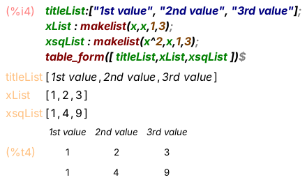
Eftersom en matris är en lista med listor kan också matriser omvandlas till tabeller på liknande sätt.
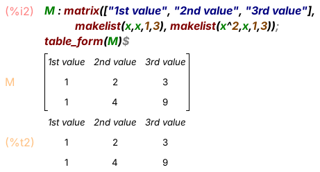
Funktionen wx_matrix() utökar Maximas kommando
matrix() med flexiblare matrisformatering i wxMaxima:
wx_matrix( <matrix>, [options] )
lines=true: ritar avskiljande linjer
mellan cellerna. Det krävs för att visuellt skilja rubriker från
data.rownames=true: anger för wxMaxima att
matrisens första kolumn innehåller etiketter.colnames=true: anger för wxMaxima att
matrisens första rad innehåller etiketter.parenstyle=<style>: anger typen
av parenteser eller klamrar runt matrisen. Följande stilar stöds:
round (), square [],
angled <>, straight
|| och none.oversized=<mode>: Anger hur just
denna matris visas om den är för stor för fönstret, oavsett
inställningen Matriser som är för stora för fönstret (se
nedan): full visar hela matrisen, elide
utelämnar raderna och kolumnerna i mitten och scroll visar
den i en ruta som är lika stor som fönstret och har egna
rullningslister.banding=<mode>: Anger om
varannan rad och kolumn i matrisen ska skuggas svagt (se nedan):
true skuggar dem alltid, även om matrisen ryms i fönstret.
false gör det aldrig, inte ens i fönstret som öppnas vid
dubbelklickning. Standardvärdet auto skuggar dem bara om
matrisen är för stor för fönstret.Exempel:
wx_matrix(matrix(["Name", "Value"], ["X", 10], ["Y", 20]),
lines=true, rownames=true, colnames=true, parenstyle=square);wx_matrix() visar inget i sig: funktionen returnerar
matrisen med bifogad formatering, som används när värdet visas. Den kan
alltså lagras i en variabel och visas med sin formatering senare, och en
matris som avslutas med $ visas inte alls. En ny matris som
beräknas utifrån den, till exempel genom addition eller transponering,
visas på vanligt sätt igen.
En matris kan inte radbrytas som en lång summa. Därför utelämnar
wxMaxima som standard raderna och kolumnerna i mitten av en matris som
är för stor för fönstret och markerar luckan med ⋯,
⋮ och ⋱, på samma sätt som en stor matris
skrivs för hand. De första och sista raderna och kolumnerna förblir
alltid synliga. Om du håller muspekaren över matrisen visas vilka rader
och kolumner som har utelämnats. Inställningen Matriser som är för
stora för fönstret på fliken Arbetsblad i
inställningsdialogen kan i stället visa hela matrisen, vilket gör att
hela arbetsbladet kan rullas i sidled, eller visa den i en ruta som är
lika stor som fönstret och har egna rullningslister. Där rullar
mushjulet arbetsbladet om inte matrisen eller något inuti den är
markerat. En sådan matris skrivs ut med raderna och kolumnerna i mitten
utelämnade. Oavsett om matrisens mitt utelämnas eller matrisen visas i
en rullningsbar ruta skuggas varannan rad och kolumn svagt så att de
blir lätta att följa genom matrisen. En matris som ryms i fönstret
förblir oskuggad, om inte alternativet banding för
wx_matrix() anger något annat. Allt detta påverkar bara det
som visas på skärmen och skrivs ut: vid kopiering, sparande och export
ingår alltid alla matriselement. Alternativet oversized för
wx_matrix() åsidosätter inställningen för en enskild
matris. En matris som enligt det alternativet ska rullas får ändå sin
mitt utelämnad på papper, och när en matris exporteras som bild visas
alltid hela matrisen. Dubbelklicka på en matris vars mitt utelämnas
eller som visas i en rullningsbar ruta för att öppna ett eget fönster
som visar hela matrisen. Fönstret kan storleksändras och rullas, och
Escape stänger det. Ctrl+F i detta fönster söker i
matrisen: varje träff markerar elementet där den finns och rullar fram
det, och en ny sökning går vidare till nästa matchande element.
WxMaxima har några funktioner som samlar in information om det aktuella systemet för felrapporter:
wxbuild_info() samlar in information om den version av
wxMaxima som körs.wxbug_report() beskriver hur och var du kan rapportera
fel.Om du anger texten highlight som andra argument till
Maximas kommando box() skriver wxMaxima
det första argumentet med röd förgrundsfärg.
Med set_display() kan du ange hur wxMaxima ska återge
utdata.
set_display('xml) är standardvärdet. Då kommunicerar
Maxima med wxMaxima via en maskinläsbar XML-dialekt, som kan ses i
sidopanelen “Obehandlad XML”, och visar de resulterande formlerna snyggt
formaterade med bland annat matriser, rottecken och bråk.
set_display('ascii) får wxMaxima att visa formler som
ASCII-grafik, precis som Maxima på kommandoraden.
set_display('none) ger ASCII-resultat på en rad, precis
som display2d:false; i Maxima på kommandoraden.
WxMaximas hjälpmeny ger tillgång till handböckerna för Maxima och
wxMaxima, tips, några exempelarbetsblad och demonstrationerna som ingår
i Maxima på kommandoraden, via kommandot demo().
Observera att demonstrationerna skriver:
Skriv ';' vid prompten '_' och tryck på <enter> för att fortsätta demonstrationen.Det gäller för Maxima på kommandoraden. I wxMaxima fortsätter du däremot som standard med CTRL+ENTER.
Du kan ändra detta under Inställningar->Arbetsblad->“Snabbtangenter för att skicka kommandon till Maxima”.
Hjälp > Felsökning kontrollerar de vanligaste orsakerna
till att wxMaxima inte fungerar: om Maxima hittas, om
Maxima startar, ansluter till wxMaxima, skickar sin
första prompt och bekräftar att det är den Maxima-process som
wxMaxima startade, om den accepterar Lisp-koden från
wxMaxima och kan läsa in paket och draw, om dess
temporära katalog kan användas för diagram, om gnuplot kan rita
diagram i formaten png och pngcairo, om
wxMaxima kan stoppa Maxima igen och om handböckerna,
hjälpsidopanelen, en webbläsare, översättningarna, text i SVG-bilder och
AI-sidopanelen är tillgängliga. För detta startas en egen
Maxima-process, så arbetsbladets Maxima-process och
dess eventuella beräkningar lämnas i fred. Kontrollerna är grupperade på
sidor (Maxima, paket och diagram, hjälp och handböcker samt
användargränssnitt), som var och en markeras med symbolen för sitt
viktigaste resultat: en grön bock om allt fungerar och ett rött kryss om
något inte fungerar. Markera en rad för att se vad kontrollen visade
och, vid problem, vad du kan göra åt det. Kopiera rapport
kopierar allt till urklipp, färdigt att klistra in i en felrapport.
Maxima, som utför själva matematiken, och wxMaxima, som tillhandahåller användargränssnittet, är separata program som kommunicerar via en lokal nätverksanslutning. Den troligaste orsaken är därför att anslutningen inte fungerar. En brandvägg kan till exempel vara inställd på att inte bara stoppa obehöriga internetanslutningar utan också blockera kommunikation mellan processer på samma dator. Eftersom Maxima körs i en Lisp-miljö behöver processen vars kommunikation blockeras inte heta “maxima”. Vanliga namn på programmet som öppnar nätverksanslutningen är sbcl, gcl, ccl, lisp.exe eller liknande.
På Unix-datorer kan en annan orsak vara att loopback-nätverket, som möjliggör nätverksanslutningar mellan program på samma dator, inte är korrekt inställt.
De flesta moderna XML-baserade format är i grunden vanliga zip-filer.
WxMaxima använder ingen komprimering, så innehållet i
.wxmx-filer kan visas i valfri textredigerare.
Om zip-signaturen i slutet av filen är oskadad kan de flesta
operativsystem packa upp informationen efter att du bytt filändelse från
.wxmx till .zip. På liknande sätt kan man
återställa ursprungliga bildfiler ur ett ordbehandlingsdokument. Om
zip-signaturen är skadad finns ändå hopp: om wxMaxima upptäckte
ett fel vid sparandet kan det finnas en .wxmx~-fil vars
innehåll kan hjälpa.
Även om en sådan fil saknas finns möjligheter. .wxmx är
ett behållarformat och XML-delen lagras okomprimerad. Du kan byta
filändelsen från .wxmx till .txt och använda
en textredigerare för att rädda XML-delen. Den börjar med
<?xml version="1.0" encoding="UTF-8"?> och slutar med
</wxMaximaDocument>. Före och efter denna text visas
en del oläsbart binärt innehåll i textredigeraren.
Om du sparar en textfil som enbart innehåller denna del, exempelvis
genom att kopiera den till en ny fil, med filändelsen .xml,
kan wxMaxima återställa texten från dokumentet.
Normalt väntar wxMaxima tills hela den tvådimensionella
formeln har överförts innan den formateras. Det sparar tid genom att
undvika upprepade försök att formatera en ofullständig ekvation.
Kommandot disp kan dock visa felsökningsutdata direkt utan
att vänta på att det aktuella Maxima-kommandot blir klart:
for i:1 thru 10 do (
disp(i),
/* (sleep n) is a Lisp function, which can be used */
/* with the character "?" before. It delays the */
/* program execution (here: for 3 seconds) */
?sleep(3)
)$Se även kommandot wxstatusbar() ovan.
Det betyder att wxMaxima inte kunde läsa filen som Maxima skulle ha bett Gnuplot att skapa.
Möjliga orsaker är:
implicit_plot, som inte lästes in med Maximas
kommando load() innan diagrammet skulle ritas..gnuplot i katalogen som anges av Maxima-variabeln
maxima_userdir. Filen innehåller instruktionerna från
Maxima till Gnuplot och är därför oftast användbar vid
felsökning.wxplot_pngcairo som
true i Maxima..png-fil.Som standard sätts skjutreglagevariabelns värde in i uttrycket som
ska ritas bara om variabeln är synlig i uttrycket. Problemet löses genom
att använda subst för att sätta in skjutreglagevariabeln i
ekvationen. Ett exempel finns i slutet av avsnittet Bädda in animeringar i
arbetsbladet.
Det finns separata ångrafunktioner för cellåtgärder och för ändringar inne i celler, så detta händer förhoppningsvis sällan. Om det ändå inträffar finns flera sätt att återställa data:
playback();En möjlig orsak är att Maxima inte finns på den plats som anges på fliken ”Maxima” i wxMaximas inställningsdialogruta och därför inte kan startas. Ange sökvägen till en fungerande körbar Maxima-fil för att lösa problemet.
Det är teoretiskt möjligt att wxMaxima inte upptäcker att Maxima har avslutat beräkningen och därför aldrig får veta att nya data kan skickas. I så fall kan ”Utlös beräkning” synkronisera programmen igen.
Lisp-kompilatorn SBCL har som standard en minnesgräns som gör att den
kan köras även på enklare datorer. Gränsen kan vara för låg vid
kompilering av stora programvarupaket som Lapack eller vid hantering av
mycket stora ekvationslistor. Du kan höja den med kommandoradsparametern
--dynamic-space-size, som anger hur många megabyte SBCL ska
reservera. En 32-bitarsversion av SBCL på Windows kan reservera upp till
999 megabyte. En 64-bitarsversion på Windows kan ställas in på mer än de
cirka 1280 megabyte som kompileringen av Lapack kräver.
Ett sätt att ge Maxima, och därmed SBCL, kommandoradsparametrar är att använda fältet “Ytterligare parametrar för Maxima” i wxMaximas inställningsdialogruta.
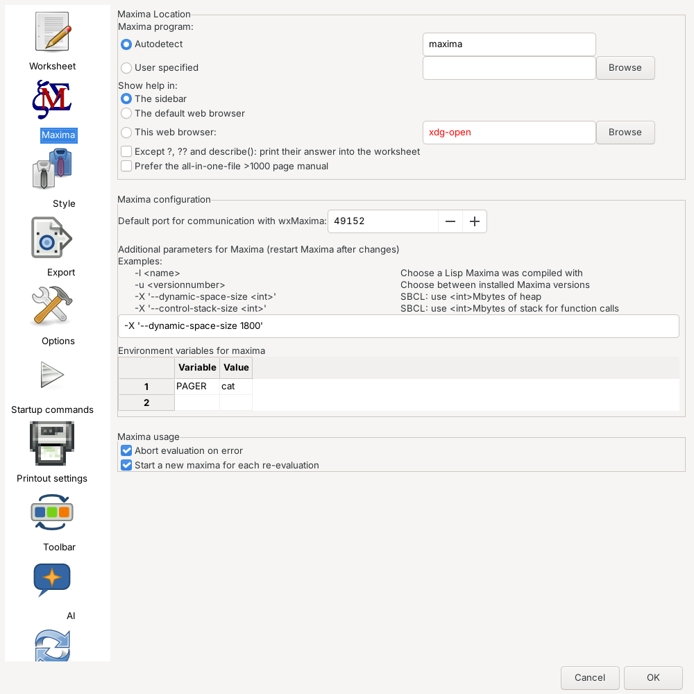
Installation av paketet ibus-gtk bör lösa problemet. Mer
information finns på (https://bugs.launchpad.net/ubuntu/+source/wxwidgets3.0/+bug/1421558).
Om din Maxima bygger på SBCL behöver följande rad läggas
till i .sbclrc:
(setf sb-impl::*default-external-format* :utf-8)Katalogen där filen ska placeras beror på systemet och installationen. En SBCL-baserad Maxima som redan har beräknat en cell i den aktuella sessionen kan ange platsen med följande kommando:
:lisp (sb-impl::userinit-pathname)Det verkar finnas problem mellan visningsservern Wayland och wxWidgets. WxMaxima kan påverkas, till exempel genom att sidopaneler inte går att flytta.
Du kan antingen stänga av Wayland och använda X11 för hela systemet,
eller enbart ange att wxMaxima ska använda X Window System genom att
ställa in GDK_BACKEND=x11.
Starta till exempel wxMaxima med:
GDK_BACKEND=x11 wxmaxima
På vissa KDE Plasma-installationer försvinner den globala menyraden
när du klickar på den. Felet finns i proxyn för den globala menyn, och
lösningen är att låta wxMaxima använda en egen menyrad. Det gör du genom
att ange UBUNTU_MENUPROXY=0.
Från och med version 26.05.0 försöker wxMaxima ange denna variabel automatiskt om ett berört system upptäcks: KDE, Unity eller Ubuntu med äldre wxWidgets-versioner.
Om den automatiska lösningen inte fungerar kan du starta wxMaxima manuellt med:
UBUNTU_MENUPROXY=0 wxmaxima
Antingen byggdes wxWidgets utan stöd för Microsoft WebView2 eller så är Microsoft WebView2 inte installerat.
Hjälp/Om visar vilka av den inbyggda webbläsarens förutsättningar som finns i denna wxMaxima-version och vilka som saknas. Loggfönstret (Visa/Visa eller dölj loggfönster) visar samma lista.
Webbläsaren kan vara installerad som Snap, Flatpak eller AppImage. Sådana versioner kan ofta inte komma åt filer som är installerade lokalt i systemet. En annan orsak kan vara att Maxima eller wxMaxima är installerat som Snap, Flatpak eller i ett annat format som inte ger värdsystemet åtkomst till innehållet. En tredje möjlighet är att Maximas HTML-handbok inte är installerad och att nätversionen inte går att nå.
Arbetsbladet bäddar in .png-filer. I wxMaxima
kan du ange var de ska skapas:
wxdraw2d(
file_name="test", /* extension .png automatically added */
explicit(sin(x),x,1,10)
);Om du vill använda ett annat format är det enklare att skapa bilderna och sedan importera dem till arbetsbladet:
load("draw");
pngdraw(name,[contents]):=
(
draw(
append(
[
terminal=pngcairo,
dimensions=wxplot_size,
file_name=name
],
contents
)
),
show_image(printf(false,"~a.png",name))
);
pngdraw2d(name,[contents]):=
pngdraw(name,gr2d(contents));
pngdraw2d("Test",
explicit(sin(x),x,1,10)
);Använd variabeln wxplot_size:
wxdraw2d(
explicit(sin(x),x,1,10)
),wxplot_size=[1000,1000];1 HIToolbox 0x00007ff80cd91726 _ZN15MenuBarInstance22EnsureAutoShowObserverEv + 102
2 HIToolbox 0x00007ff80cd912b8 _ZN15MenuBarInstance14EnableAutoShowEv + 52
3 HIToolbox 0x00007ff80cd35908 SetMenuBarObscured + 408
...Det kan vara ett problem i operativsystemet. Att stänga av automatisk döljning av menyraden under Systeminställningar => Skrivbord och Dock => Menyrad kan lösa det. Mer information finns i wxMaxima-ärende #1746.
plot2d eller draw inget fönster utan skriver
”Broken pipe”Ett meddelande som
WARNING:
Couldn't write to #<SB-SYS:FD-STREAM for "descriptor 9" {1002FC5EF3}>:
Broken pipebetyder att Gnuplot avslutades innan Maxima hann
skicka diagrammet. På macOS beror det vanligtvis på att macOS blockerar
en Gnuplot-version som hämtats från internet. Eftersom
Maxima startar Gnuplot i bakgrunden kan macOS inte
fråga om programmet får köras. Starta Gnuplot en gång från
Terminal eller tillåt det under Systeminställningar => Integritet och
säkerhet för att ange att macOS får köra det.
xattr -r -d com.apple.quarantine följt av sökvägen till
Gnuplot (till exempel Gnuplot.app) gör samma sak.
Se wxMaxima-ärende
#1461.
XQuartz behövs inte för diagram i separata fönster: varken
wxMaxima eller Maxima väljer någon
Gnuplot-terminal för dem, så Gnuplot använder sin egen
standardterminal. Den är qt för Gnuplot från
Homebrew och aqua (AquaTerm) för Gnuplot från
MacPorts. Båda kan rita utan XQuartz. Endast en
Gnuplot-version som enbart erbjuder terminalen
x11, eller där GNUTERM är satt till
x11, behöver XQuartz. Inbäddade diagram
(wxplot2d, wxdraw med flera) öppnar aldrig
något fönster och behöver inget av detta.
Loggmeddelanden kan hjälpa vid felsökning. WxMaxima kan logga många händelser. De flesta loggposter är användbara för utvecklare, särskilt vid problem eller fel. I en utgåveversion visas loggfönstret inte som standard, men i en utvecklingsversion visas det normalt som ett andra fönster. Du kan visa eller dölja fönstret via menyn “Visa->Visa/dölj loggfönster”.
Meddelanden går inte förlorade när loggfönstret är dolt. Om du visar det senare ser du tidigare loggmeddelanden, förutsatt att du inte har rensat dem.
Dessa meddelanden kan vara användbara när du rapporterar fel eller själv försöker hitta ett fel.
Loggmeddelanden kan dessutom skrivas till standardfel, STDERR, med kommandoradsalternativet “–logtostderr”. På Windows öppnas en separat textkonsol eftersom ett grafiskt Windows-program inte har standardströmmarna anslutna.
Ja. Använd LaTeX-paketet “geometry” för att ange marginalernas storlek.
För att ange marginaler på 1 cm kan du lägga till följande rad i LaTeX-inledningen, till exempel via fältet “Exportera”->“Ytterligare rader för TeX-inledningen” i inställningsdialogrutan:
\usepackage[left=1cm,right=1cm,top=1cm,bottom=1cm]{geometry}Om wxWidgets är tillräckligt nytt använder wxMaxima
automatiskt mörkt läge när operativsystemet gör det. Själva arbetsbladet
har som standard en ljus bakgrund, men det går att ändra. Du kan också
snabbt växla arbetsbladet mellan ljust och mörkt med menyvalet
Visa/Invertera arbetsbladets ljushet.
De flesta bilder är gjorda för vit bakgrund, och svarta linjer med genomskinlig bakgrund skulle vara osynliga på ett mörkt arbetsblad. Därför fylls bilders genomskinliga delar som standard med en bakgrundsfärg om arbetsbladets bakgrund är mörk. Färgen anges med stilen Bakgrund för genomskinliga bilder på fliken Stil i inställningsdialogen. Inställningen Bakom genomskinliga delar av bilder på fliken Arbetsblad kan stänga av bakgrunden eller låta den visas även på ljusa arbetsblad.
WxMaxima utför vissa stora uppgifter, exempelvis tolkning av Maximas handbok på över tusen sidor, i bakgrunden. Det märks normalt inte alls. När resultatet av en sådan uppgift behövs kan wxMaxima dock behöva vänta några sekunder innan arbetet kan fortsätta.
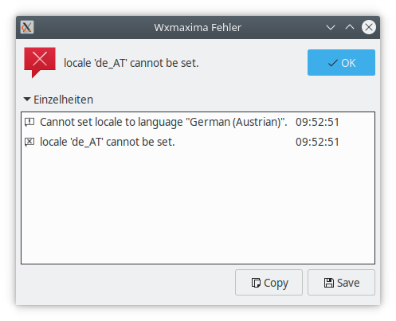
Samma problem kan också förekomma i andra program. Översättningarna verkar fungera efter att du klickat på OK. WxMaxima använder både egna översättningar och översättningar från wxWidgets-ramverket.
De aktuella lokalerna kanske saknas i systemet. På Ubuntu- och
Debian-system kan de genereras med
dpkg-reconfigure locales.
Du hittar symbolerna i Unicode-sidopanelen genom att söka efter ”double-struck capital”. Det valda typsnittet måste också stödja symbolerna. Välj ett annat typsnitt om de inte visas korrekt.
När wxMaxima används är Maxima-variabeln maxima_frontend
satt till wxmaxima. Variabeln
maxima_frontend_version innehåller då
wxMaxima-versionen.
Om inget gränssnitt används, alltså om du kör Maxima på
kommandoraden, har dessa variabler värdet false.
wx_version_min("26.09.0") returnerar true
om den wxMaxima-version som körs är minst 26.09.0 och false
om den är äldre eller om kommandot körs i Maxima på
kommandoraden. Versionsnumrets delar jämförs som tal, så 26.10.0 räknas
som nyare än 26.9.0, och en utelämnad del räknas som 0:
wx_version_min("26.9") är samma sak som
wx_version_min("26.09.0"). En utvecklingsversion räknas som
den version den kommer att ges ut som.
wxMaxima 26.08.0 och äldre känner ännu inte till
wx_version_min(). Där ger anropet, liksom alla funktioner
som Maxima inte känner till, inget fel: det returnerar bara sig
självt utan beräkning som wx_version_min("26.09.0"), vilket
varken är true eller false. Ett enkelt
if wx_version_min("26.09.0") then ... lämnas därför också
oberäknat i dessa versioner. Ett arbetsblad som även måste fungera med
dem kan jämföra resultatet med true, vilket ger
false där:
if wx_version_min("26.09.0") = true then
wx_matrix(M, oversized=scroll)
else
M;Om det inte går att spara som wxmx-fil kan du prova att spara som wxm-fil, eller tvärtom. Du kan också försöka ta bort alla utdata via Cell->Ta bort alla utdata och spara filen igen. Oväntade utdata kan orsaka problem vid sparandet.
Program med grafiska gränssnitt startas vanligen genom att du klickar på en skrivbordsikon eller ett menyval. WxMaxima erbjuder ändå några kommandoradsalternativ när programmet startas från kommandoraden.
-v eller --version: visa
versionsinformation.-h eller --help: visa en kort
hjälptext.-o eller --open=<str>: öppna filen
vars namn anges som argument till alternativet.-e eller --eval: beräkna filen efter att
den öppnats.-b eller --batch: Om kommandoraden öppnar
en fil beräknas alla celler i filen och filen sparas därefter. Det är
till exempel användbart om sessionen som beskrivs i filen får
Maxima att skapa utdatafiler. Satsbearbetningen avbryts om
wxMaxima upptäcker att Maxima har gett ett
felmeddelande och avslutas om Maxima ställer en fråga som
saknar ett förberett svar: matematik är till sin natur delvis
interaktiv, så en helt interaktionsfri satsbearbetning kan inte alltid
garanteras.-d eller --diff: Jämför 2 eller 3 filer
sida vid sida i jämförelsevyn.--single_process: Öppna alla arbetsblad i samma
process.--single_thread: Kör alla bakgrundsuppgifter i
huvudtråden.--logtostderr: Skriv även alla meddelanden från
sidopanelen för felsökningsmeddelanden till standardfel.--pipe: Vidarebefordra meddelanden från Maxima till
standardfel.--debug: Aktivera resurskrävande
felsökningskontroller.--exit-on-error: Stäng programmet vid varje
Maxima-fel.-f eller --ini=<str>: Använd
initieringsfilen som anges som argument till detta
kommandoradsalternativ.-u, --use-version=<str>: Använd
Maxima-versionen <str>.-l, --lisp=<str>: Använd en
Maxima-version som kompilerats med Lisp-kompilatorn
<str>.-X, --extra-args=<str>: Ange
ytterligare argument till Maxima.-m eller --maxima=<str>: Ange
sökvägen till den körbara filen för maxima.--enableipc: Låt Maxima styra wxMaxima genom
kommunikation mellan processer. Använd detta alternativ med
försiktighet.--wxmathml-lisp=<str>: Sökväg till wxMathML.lisp
(om den inbyggda inte ska användas, främst för utvecklare).Vissa operativsystem kan använda ett tankstreck i stället för ett minustecken framför kommandoradsalternativen.
På Linux och andra Unix-liknande system installerar wxMaxima kompletteringar för bash, zsh och fish, så att Tab-tangenten kompletterar dessa alternativ och namnen på filer som wxMaxima kan öppna.
En lyckad körning avslutas med status 0. En satskörning som måste avbrytas innan den är klar avslutas i stället med någon av följande statuskoder, så att ett skript som anropar wxMaxima kan avgöra orsaken utan att läsa loggen:
90: Maxima rapporterade ett fel och
--exit-on-error hade angetts.91: Maxima ställde en fråga som saknar ett
förberett svar.92: Filen som angavs på kommandoraden kunde inte
öppnas.93: Arbetsbladet kunde inte sparas.94: Data för en bild i arbetsbladet kunde inte läsas
in.95: En bild i arbetsbladet kunde inte avkodas
(kontrolleras bara med --debug).wxMaxima utvecklas huvudsakligen i C++ med wxWidgets-ramverket. Vi använder CMake som byggsystem, och en liten del av programmet är skriven i Lisp. Om du kan dessa programmeringsspråk och vill hjälpa till med projektet med öppen källkod kan du delta i wxMaxima-projektet på https://github.com/wxMaxima-developers/wxmaxima.
Det behövs inte bara programmerare! Du kan också bidra genom att förbättra dokumentationen, hitta och rapportera fel, föreslå rättningar och nya funktioner eller översätta wxMaxima och handboken till ditt språk. Läs README.md i underkatalogen locales om hur översättningen går till.
Du kan också besvara andra användares frågor i diskussionsforumet.
wxMaximas källkod är dokumenterad med Doxygen här.
Programmet är nästan fristående. Förutom systembibliotek och
wxWidgets-biblioteket behövs inga externa beroenden, såsom grafikfiler
eller Lisp-delen i wxmathML.lisp, eftersom dessa filer
ingår i den körbara filen.
Om du är utvecklare och vill prova en ändrad
wxmathML.lisp utan att kompilera om allt kan du använda
kommandoradsalternativet --wxmathml-lisp=<str> för
att läsa en annan Lisp-fil än den inbyggda.